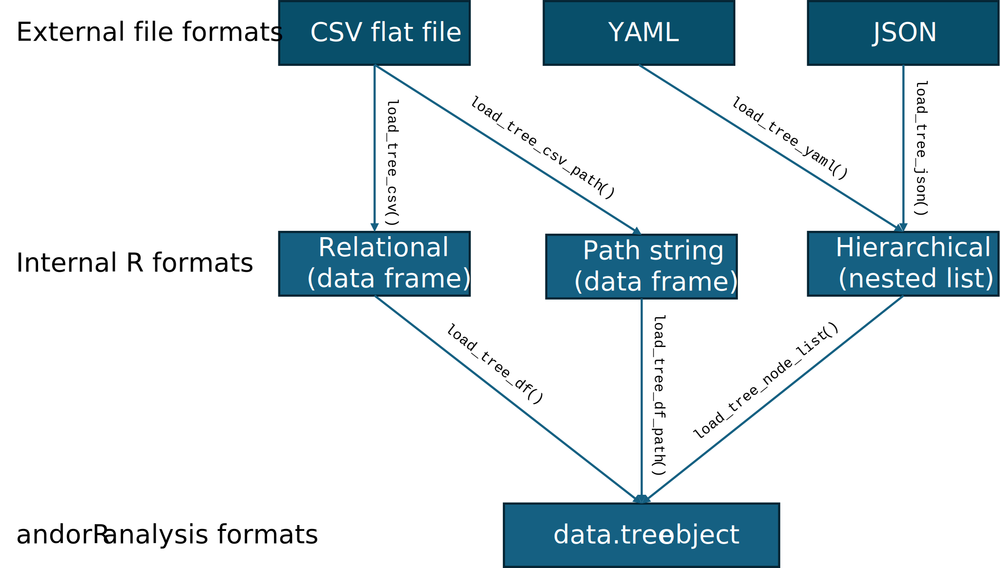

Data Formats for andorR
data-formats.RmdThe andorR package is designed to be flexible, allowing
you to define your decision tree structure in several different formats
depending on your preference and source data. This guide explains the
three primary formats and the functions used to load them.
The examples below use the ethical investment decision
tree, which is included as a dataset within this package.
1. The Hierarchical Format (YAML or JSON)
This is often the most intuitive and human-readable format, as its indented structure visually represents the tree’s hierarchy. It is highly recommended for creating and managing trees in a text editor.
Required Fields:
-
name: The name of the node. -
nodes: A list of child nodes (this key is used instead of the reserved wordchildren). -
rule: Required for parent nodes, can be AND or OR -
question: Required for leaf nodes
YAML format
An excerpt from a YAML file (ethical.yml) looks like
this:
name: Invest in Company X
rule: AND
nodes:
- name: Financial Viability
rule: AND
nodes:
- name: Profitability and Growth Signals
rule: OR
question: "Is the company showing strong signs of profitability?"
nodes:
- name: FIN1
question: "Company demonstrates consistent, high revenue growth."
# ... and so onTo load a tree from a YAML file, use the
load_tree_yaml() function.
# This code shows how to load a YAML file from the package's example data
yaml_path <- system.file("extdata", "ethical.yml", package = "andorR")
tree_from_yaml <- load_tree_yaml(yaml_path)
# View the loaded tree
print(tree_from_yaml)JSON format
An excerpt from a JSON file (ethical.json) looks like
this:
{
"name": "Invest in Company X",
"rule": "AND",
"nodes": [
{
"name": "Financial Viability",
"rule": "AND",
"nodes": [
{
"name": "Profitability and Growth Signals",
"rule": "OR",
"question": "Is the company showing strong signs of profitability?",
"nodes": [
{
"name": "FIN1",
"question": "Company demonstrates consistent, high revenue growth."
},
# ... and so onTo load a tree from a JSON file, use the
load_tree_json() function.
# This code shows how to load a JSON file from the package's example data
json_path <- system.file("extdata", "ethical.json", package = "andorR")
tree_from_json <- load_tree_json(json_path)
# View the loaded tree
print(tree_from_json)2. The Relational (ID/Parent) Format
This is a flat, tabular format common in spreadsheets and databases.
The tree structure is defined by a parent column that
contains the id of its parent node. This is also the format
of the ethical dataset included in the package.
Required Fields:
-
id: A unique numeric ID for every node. The root must haveid = 0. -
name: The name/code for the node. -
parent: Theidof the parent node. The root’s parent should beNA. -
rule: Required for parent nodes, can be AND or OR -
question: Required for leaf nodes
The first few rows of the ethical dataset look like
this:
| id | name | question | rule | parent |
|---|---|---|---|---|
| 0 | Invest in Company X | NA | AND | NA |
| 1 | Financial Viability | NA | AND | 0 |
| 2 | Acceptable Environmental Stewardship | NA | OR | 0 |
| 3 | Demonstrable Social Responsibility | NA | OR | 0 |
| 4 | Strong Corporate Governance | NA | AND | 0 |
| 5 | Profitability and Growth Signals | NA | OR | 1 |
| 6 | Solvency and Stability | NA | AND | 1 |
| 7 | FIN1 | Company demonstrates consistent, high revenue growth. | NA | 5 |
| 8 | FIN2 | Company maintains a high net profit margin for its industry. | NA | 5 |
| 9 | FIN3 | Company holds a dominant or rapidly growing market share. | NA | 5 |
To load this format, you can use load_tree_df() if you
already have a data frame, or load_tree_csv() to read it
from a .csv file.
# Load the example 'ethical' data frame that comes with the package
data(ethical)
# Build the tree from the data frame object
tree_from_df <- load_tree_df(ethical)
# The structure is identical to the one loaded from YAML
print(tree_from_df$children[[1]]$name) # Prints "Financial Viability"
#> [1] "Financial Viability"3. The Path String Format
This is another flat-file format that is very robust. The hierarchy
is defined by a single path column that contains the full,
delimited path from the root to each node.
Required Fields:
-
path: A string with a character (like/) separating the names of the nodes in the hierarchy. -
question: Required for leaves, NA for parent nodes. -
rule: Required for parent nodes, NA for leaves.
An excerpt from a CSV file in this format would look like this:
| path | rule |
|---|---|
| Invest in Company X | AND |
| Invest in Company X/Financial Viability | AND |
| Invest in Company X/Financial Viability/Profitability and Growth Signals | OR |
| Invest in Company X/Financial Viability/Profitability and Growth Signals/FIN1 | NA |
To load this format from a CSV file, use the
load_tree_csv_path() function.
# This code shows how to load a path string CSV from the package's example data
path_csv_path <- system.file("extdata", "ethical_path.csv", package = "andorR")
tree_from_path <- load_tree_csv_path(path_csv_path)
print(tree_from_path)Summary of Formats

| Format Name | Best For | Key Structure | Core Loading Function |
|---|---|---|---|
| Hierarchical | Manual creation, readability, version control (git) | Indented YAML or JSON file with a nodes
key |
load_tree_yaml() or
load_tree_json()
|
| Relational | Exporting from databases, spreadsheets (Excel) | A flat table with id and
parent columns |
load_tree_csv() |
| Path String | Programmatic generation, ensuring structural integrity | A flat table with a single path
column |
load_tree_csv_path() |